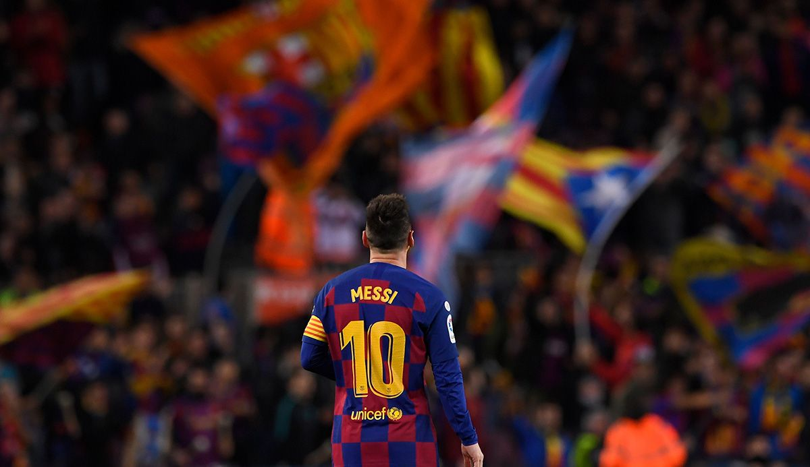
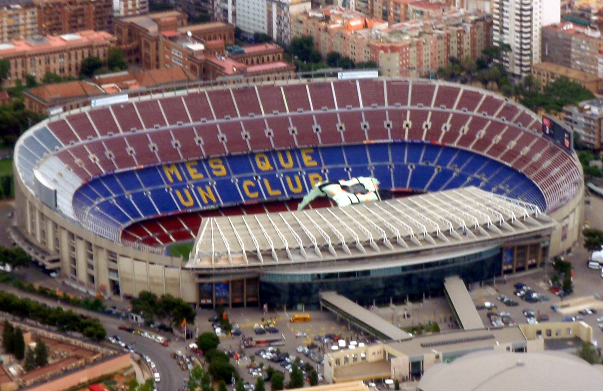

Camp Nou este un stadion de fotbal situat în Barcelona, Spania. Denumirea provine din limba catalană,
însemnând „teren (câmp) nou”. Cu o capacitate de 99 354 de locuri, este cel mai mare stadion de fotbal din Europa.
Pe acest stadion își dispută meciurile de pe teren propriu echipa FC Barcelona. Este cunoscut ca fiind unul
dintre cele mai mari, și cu una dintre cele mai electrizante atmosfere din lume.
Numele său oficial —Estadi del Futbol Club Barcelona— se traduce Stadionul FC Barcelona, deși este cunoscut
mai ales sub numele Camp Nou de către fanii din întreaga lume.
Adresa stadionului este Carrer d'Arístides Maillol 12, 08028, Barcelona, Catalunia, Spania.
Apasati pe imagini pentru a le mari:
Clubul a devenit un simbol al culturii catalane și al naționalismului catalan, mottoul său fiind prin urmare „Barça este mai mult decât un club” (catalană: FC Barcelona - Més que un club). Imnul oficial al Barcelonei este „Cant del Barça”, scris de Jaume Picas și Josep Maria Espinàs. Spre deosebire de multe alte cluburi, suporterii dețin și conduc Barcelona. Este al doilea cel mai bogat club de fotbal în ceea ce privește veniturile, având o cifră de afaceri anuală de 450 milioane €.[3] FC Barcelona are o îndelungată rivalitate cu Real Madrid, meciurile disputate între cele două echipe fiind cunoscute sub numele de „El Clásico”.